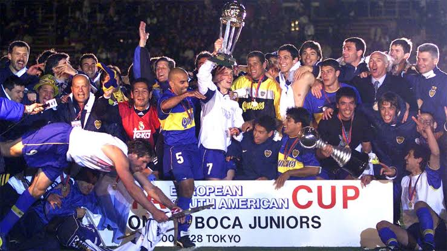
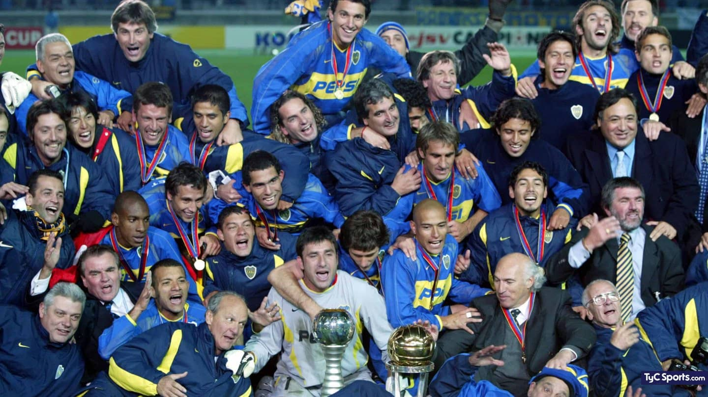
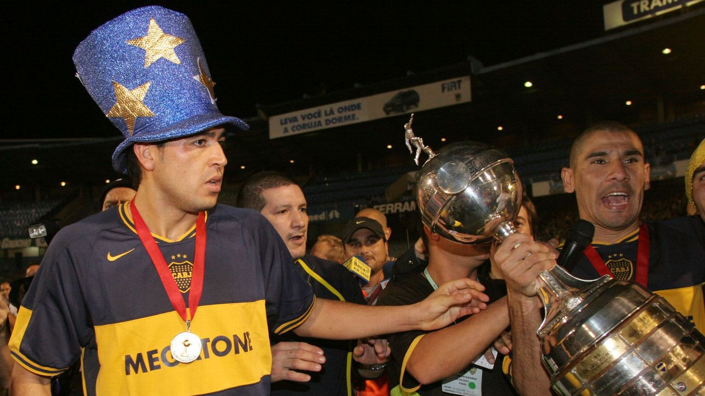
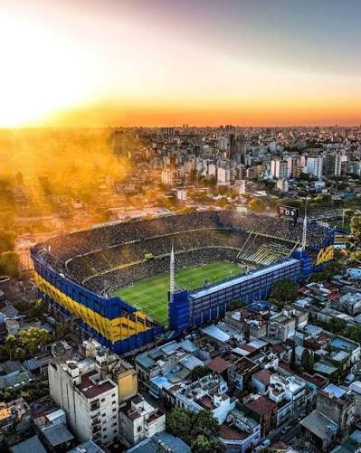
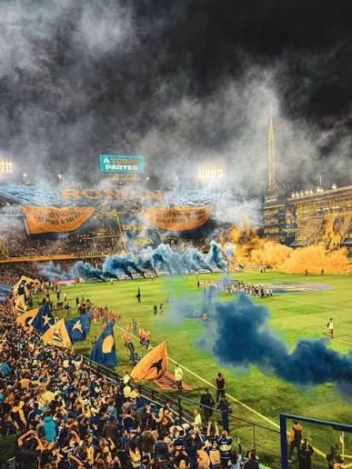

Multimedia Xeneize
¡Bienvenidos a la sección multimedia de Pasión Xeneize! Aquí podrás revivir algunos de los momentos más emocionantes de Boca Juniors a través de fotografías, videos y sonidos que representan la pasión de uno de los clubes más importantes del fútbol argentino.
Desde la emoción de La Bombonera hasta las celebraciones de sus grandes conquistas, cada imagen y cada sonido cuentan una parte de la historia del club.



Galería Xeneize
Las imágenes nos permiten revivir los momentos que han marcado la historia de Boca Juniors. Su estadio, sus jugadores y su hinchada forman parte de una identidad que trasciende el fútbol.
-
La Bombonera: el estadio donde la pasión se convierte en protagonista.

-
La hinchada: el aliento de los aficionados que acompañan al equipo.

-
La celebración: la alegría de los jugadores y seguidores después de una victoria.
-
La historia: fotografías que conservan el recuerdo de grandes generaciones de futbolistas.

Boca Juniors en movimiento
La pasión xeneize no solo se puede contar con palabras. Los videos nos permiten experimentar la emoción de los partidos, escuchar el aliento de la hinchada y recordar las grandes celebraciones que han acompañado al club a lo largo de su historia.